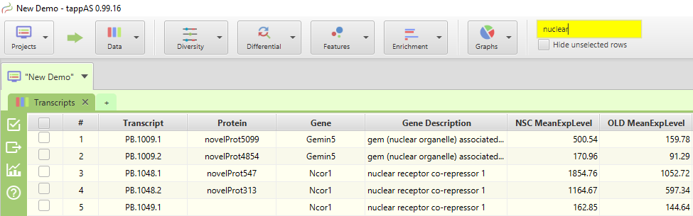
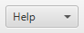
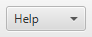

| Introduction |
<
|
>
|
Hide Contents >>
|
Here are some tips to help you get the most out of the application:
- Use context-sensitive menus - don't be afraid to right-click on any display control and see what pops up

- Take advantage of mouseover functionality - hover over buttons and visual display areas to see tooltips with additional information

- All subtabs have a menu bar on the left, explore the functionality provided in the menu buttons, see Subtab Menu Bar section
- Use the search text box on the top tool bar to search tables - search typically only includes Id, name, and description fields

- Remember table columns can be clicked for sorting or right-clicked for row selection
- Don't forget tables can have additional columns that are not shown by default; use the table menu, green + button on the top right corner of the table, to show/hide columns

- The ability to filter tables, using row selection, and export filtered lists to use as input for data analysis is a powerful tool - take advantage of it
- The background color of tables and some display controls will change from white to yellow to indicate the data has been filtered

- Subtabs and dialog windows provide a help button for accessing detailed help information, use it as needed
 

- If the 'See App Log' notification is displayed on the top right section of the application tool bar, see image below, an error has occurred.
Click on the notification symbol, or manually select the application log subtab, to see the error message. Read the error message: you may be able to figure out what if any corrective action should be taken.

- The more tabs and subtabs you keep opened, the more memory resources the application uses
- Running the application on computers low on disk space, with insufficient memory, or totally overloaded with opened applications, will eventually lead to errors